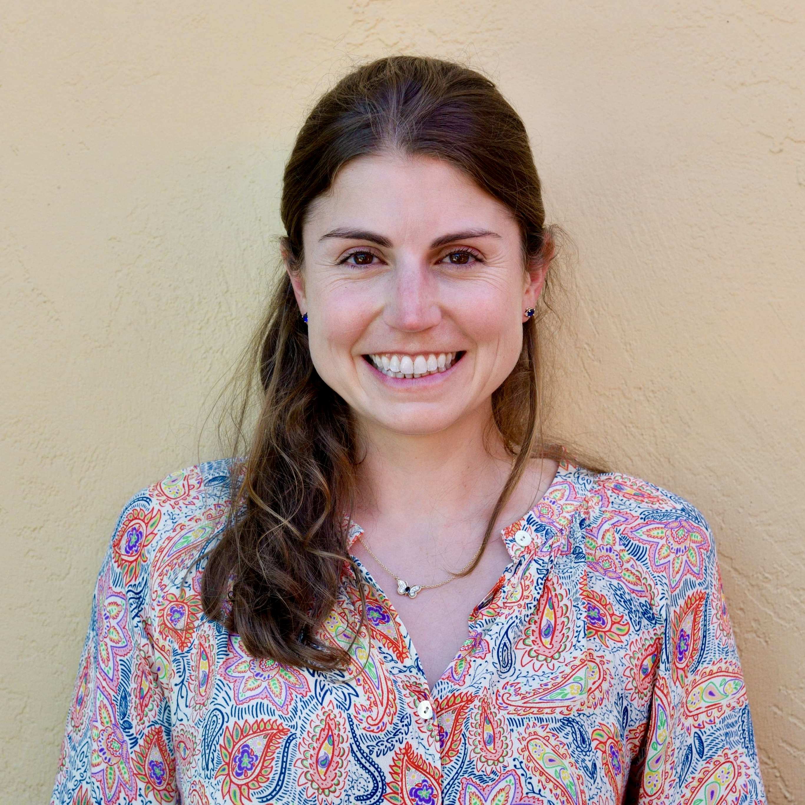

Leslie Rice
Ph.D. Student
Computer Science Department
Carnegie Mellon University
larice AT cs DOT cmu DOT edu
Office: GHC 7121
CV
I am a fifth year Ph.D. student in the Computer Science Department at Carnegie Mellon University, where I am advised by Zico Kolter.
My research focuses on robustness and uncertainty in machine learning.
Conference publications
- Robustness between the worst and average case
- Leslie Rice, Anna Bair, Huan Zhang, J. Zico Kolter
- Neural Information Processing Systems (NeurIPS) 2021
- Overfitting in adversarially robust deep learning
- Leslie Rice*, Eric Wong*, J. Zico Kolter
- International Conference on Machine Learning (ICML) 2020
- Fast is better than free: Revisiting adversarial training
- Eric Wong*, Leslie Rice*, J. Zico Kolter
- International Conference on Learning Representations (ICLR) 2020
- Generating Families of Practical Fast Matrix Multiplication Algorithms
- Jianyu Huang, Leslie Rice, Devin A. Matthews, Robert A. van de Geijn
- International Parallel and Distributed Processing Symposium (IEEE) 2017
Workshop papers
- Certified robustness against adversarial patch attacks via randomized cropping
- Wan-Yi Lin, Fatemeh Sheikholeslami, Jinghao Shi, Leslie Rice, J. Zico Kolter
- ICML 2021 Workshop on Adversarial Machine Learning
- Empirical robustification of pre-trained classifiers
- Mohammad Sadegh Norouzzadeh, Wan-Yi Lin, Leonid Boytsov, Leslie Rice, Huan Zhang, Filipe Condessa, J. Zico Kolter
- ICML 2021 Workshop on Adversarial Machine Learning